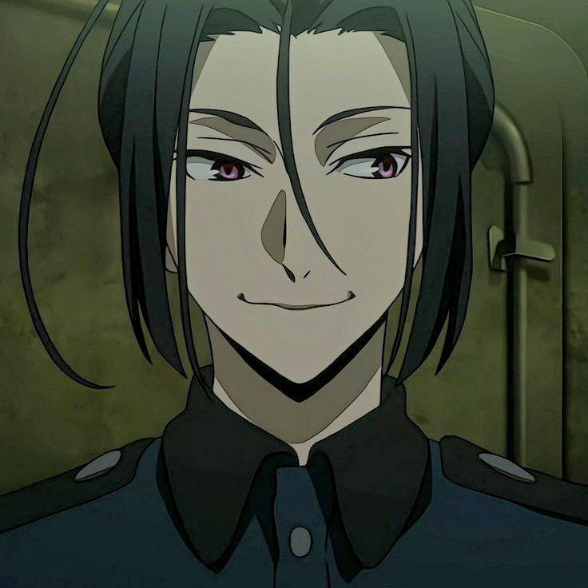
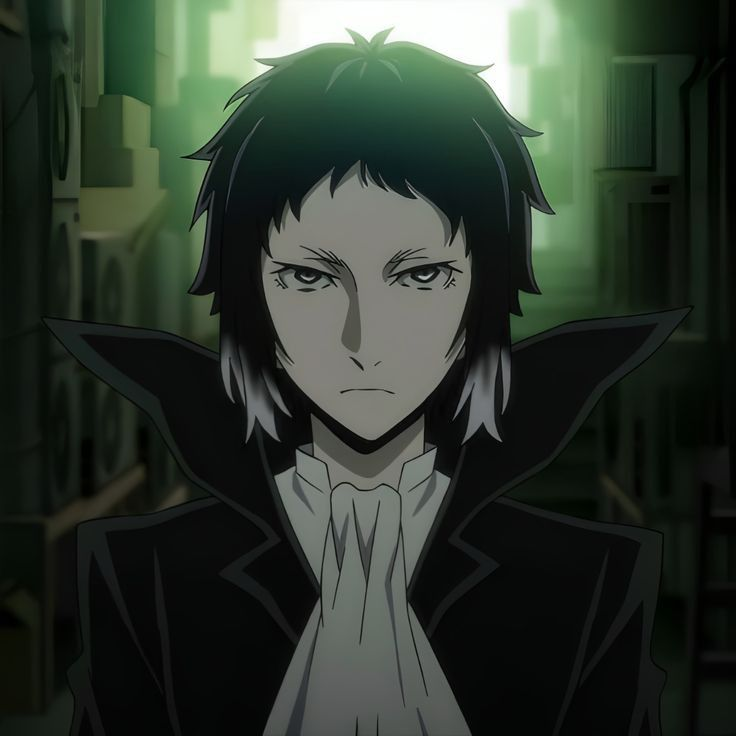
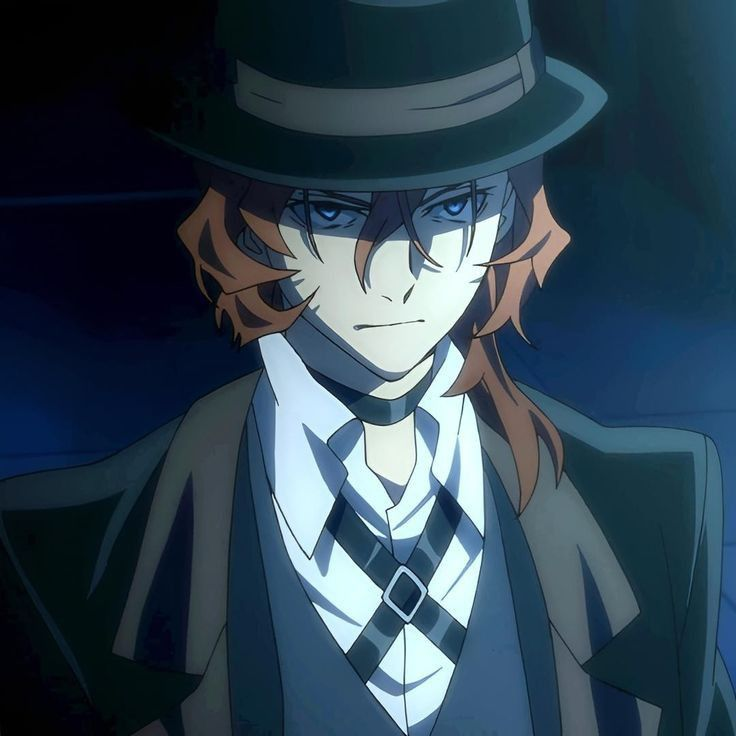
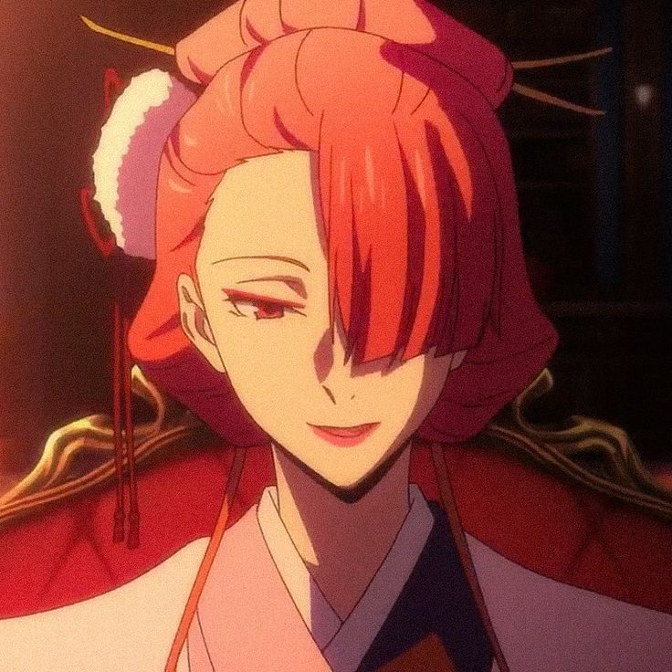
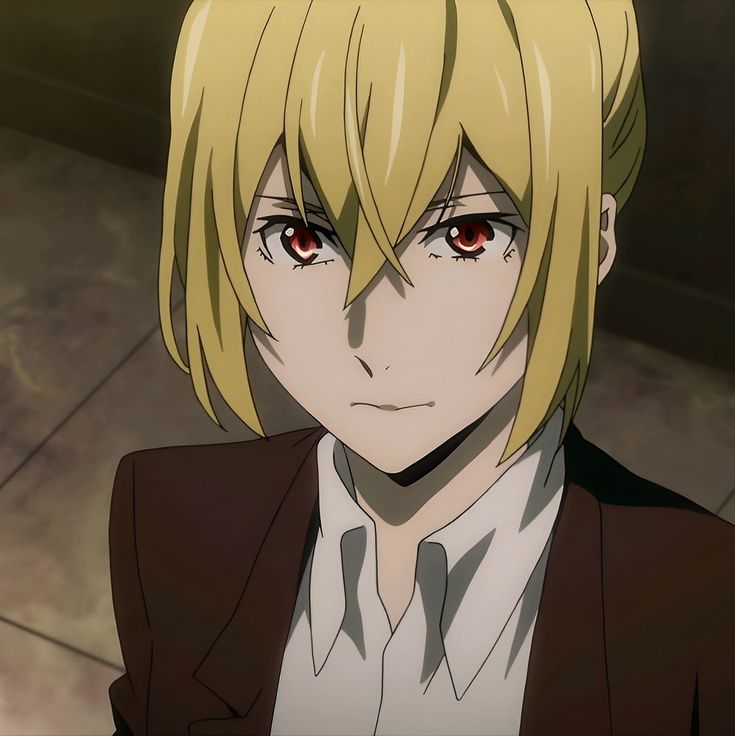
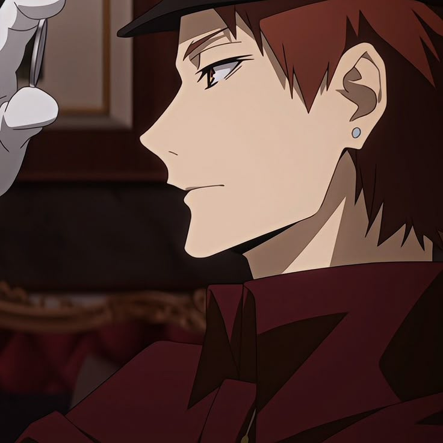
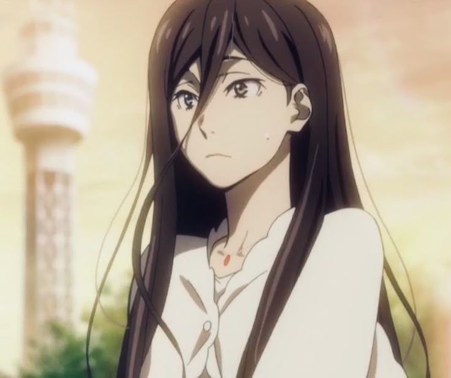
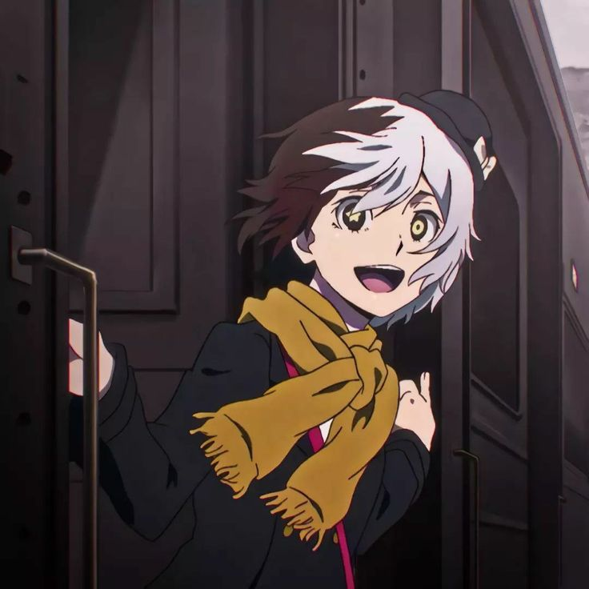

Ougai Mori

Posisi: Pemimpin Port Mafia
Umur: Sekitar 40–50-an tahun
Kepribadian: Manipulatif, dingin, kalkulatif, tapi efisien
Kemampuan: "Vita Sexualis"
mengontrol hidup dan tubuh Elise, seorang gadis roh yang terlihat seperti boneka. Elise juga bisa menyerang dan bertindak mandiri saat dipanggil.
Ryunosuke Akutagawa

Posisi: Agen tempur utama
Umur: 20 tahun
Kepribadian: Serius, haus pengakuan, sangat loyal pada Dazai
Kemampuan: "Rashoumon"
Memungkinkan mantel hitamnya berubah menjadi monster bayangan yang dapat memotong apapun. Kemampuan ini sangat ofensif dan brutal.
Chuuya Nakahara

Posisi: Eksekutif senior
Umur: 22 tahun
Kepribadian: Temperamental, setia, kompetitif terhadap Dazai
Kemampuan: "Upon the Tainted Sorrow"
memanipulasi gravitasi. Dalam bentuk penuh (Corruption), dia menjadi sangat kuat tapi tak terkendali, hanya Dazai yang bisa menghentikannya.
Kouyou Ozaki

Posisi: Eksekutif wanita senior
Umur: Tidak disebutkan (tampak 30-an)
Kepribadian: Elegan, keibuan, namun berbahaya
Kemampuan: "Golden Demon"
Dapat mengontrol kimono terkutuk yang bisa menebas musuh secara tajam dan cepat.
Higuchi Ichiyou

Posisi: Agen lapangan
Umur: 20-an tahun
Kepribadian: Serius, loyal, terkadang emosional (terutama terhadap Akutagawa)
Kemampuan: Tidak memiliki ability khusus, tapi ahli menggunakan senjata api dan strategi taktis.
Tachihara Michizou

Posisi: Double agent (Port Mafia & Hunting Dogs)
Umur: Awal 20-an
Kepribadian: Santai tapi punya sisi serius tersembunyi
Kemampuan: "Midwinter Memento"
Dapat memanipulasi logam, terutama peluru dan senjata api.
Gin Akutagawa

Posisi: Agen rahasia / pembunuh
Umur: Remaja akhir / 20 awal
Kepribadian: Pendiam, tenang, sangat mematikan
Kemampuan: Belum dikonfirmasi secara resmi, namun sangat ahli dalam pergerakan diam-diam dan pembunuhan.
Q (Kyūsaku Yumeno / Q)

Posisi: Anggota kriminal berbahaya
Umur: Anak-anak (tapi tidak dewasa secara emosional)
Kepribadian: Psikopat, tidak stabil
Kemampuan: "Dogra Magra"
Jika Q terluka oleh orang lain, mereka akan jatuh dalam halusinasi dan menjadi gila sampai membunuh diri sendiri atau orang lain. Sangat berbahaya.